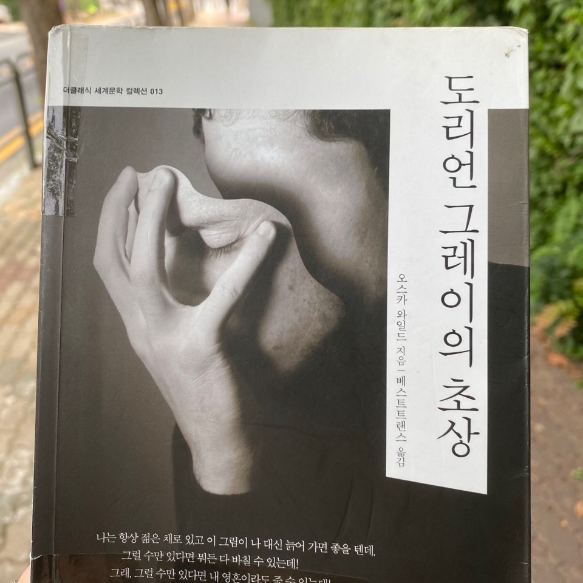

도리언 그레이의 초상

<도리언 그레이의 초상>
저자: 오스카 와일드
역자: 베스트트랜스
출판: 더클래식
별점: ★★★★☆
한줄평: "근묵자흑의 극단적 예시"
저자: 오스카 와일드
역자: 베스트트랜스
출판: 더클래식
별점: ★★★★☆
한줄평: "근묵자흑의 극단적 예시"
순수하고 맑은 영혼을 지녔던 도리언 그레이가 글러먹은 인간으로 변하는 과정을 흥미롭게 지켜볼 수 있다. 한줄평에 써 두었듯이, 도리언 그레이는 화가인 바질 홀워드의 화실에서
헨리 워튼 경과 만나 친해지는 사건을 기점으로 점점 타락해간다. 순수하고 맑은 영혼으로 묘사되던 소설 초반 도리언의 모습은
후반으로 갈수록 온데간데 없어진다. 그리고 도리언을 타락의 길로 유도한 헨리 경이 갈수록 못마땅해진다. 특히 도리언이 초반에는
성인이 되지 않은 어린 인물로 등장하기에 헨리 경을 도리언과 격리시켜야 할 것 같다고 생각했다... 부모님 없이, 자신을 못마땅하게 여기는
조부의 아래에서 자란 도리언이 가족보다 더 자주 만나며 가깝게 지내는 듯한 어른들이 바질 홀워드와 헨리 경인데 둘 다 보고 자라기에
마땅치 않은 성인들이다. 보호자로는 당연히 실격이고, 미성년자인 도리언의 교육에 매우 좋지 않아 보였다. 왜 고전 문학 속 아이들은 제대로 보호받지 못하는가?
바질 홀워드는 도리언을 자신에게 영감을 주는 신성한 존재로 여기고 있고, 헨리는 젊음과 아름다움의 가치를 과장하는 논리를 펼치며 도리언에게 도리언의 아름다움을 일깨워준다.
예술을 위한 예술을 추구했던 오스카 와일드의 사상이 작품 내내 은은하게 깔려 있다. 이런 사고관을 대변하는 헨리 경이 작중에 이제 그만 입을 다물어주었으면
좋겠다고 생각될 만큼 말을 많이 하기 때문에 작품의 정체성이라고 여겨도 될 정도이다.
본인 대신 영혼의 타락을 짊어지고 늙어가는 초상화를 얻은 이후로 도리언 그레이는 갈수록 탈선을 하는데, 충격적인 장면이 너무 많아서 우열을 가릴 수 없다.
그래도 기억에 강렬하게 남은 장면들을 고르자면 시빌 베인과 앨런 캠벨이 등장하는 부분이다. 두 장면은 각각 도리언의 영혼이 타락하기 시작하는 시점과, 완전히 타락한
시점의 사건이다. 작품 초반에 가난한 배우 시빌 베인의 연극을 본 도리언이 한눈에 사랑에 빠져 영원을 약속하더니, 시빌 베인이 자신에게 빠져
제대로 연기를 하지 못하게 되자 매몰차게 시빌을 버린다. 이에 비관한 시빌이 자살했다는 소식을 들은 도리언은 처음에는 자책하는가 싶더니 점점 시빌 베인을
버린 자신을 정당화하며 심지어는 당연시한다. 도리언이 수사 선상에 오르지 않도록 은닉을 도와주는 헨리 경 또한 가관이다. 시빌 베인의 죽음 이후
도리언의 초상화는 눈에 띄게 추악하게 변하기 시작했고, 앨런 캠벨이 등장할 즈음에는 이미 주변 평판조차 최악을 달리는 인물이 된다.
옛날에 친하게 지냈으나 사이가 매우 나빠졌다는 전 동료 앨런 캠벨에게 도리언은 자신이 살해한 바질 홀워드의 시체를 처리하도록 협박한다. 방금 쓴 한 문장에
충격적인 포인트가 너무 많아서 어이가 없다. 초상화의 비밀을 알게 된 바질 홀워드를 칼로 찔러 죽이고 다락에 방치해둔 도리언은 화학 분야에 정통한
앨런 캠벨을 집으로 호출해 시체 처리를 맡긴다. 싫다고 단호하게 거절하던 앨렌 캠벨이 어쩔 수 없이 부탁을 들어주도록 만든 것을 보면 자세히 묘사되지는 않았으나
앨런 캠벨도 도리언에게 거하게 약점을 잡힌 것 같았다. 이쯤의 도리언을 보면 정말 음침함 그 자체이다. 결국 몇시간에 걸쳐 바질 홀워드의 시체를 완벽히 없애는 데 성공한
앨런 캠벨은 얼마 후 시빌 베인처럼 자살을 택한다. 사이가 틀어진 옛 동료에게 약점이 잡혀 동료가 살해한 사체를 화학적으로 처리해 없애버려야 했으니
정신이 멀쩡하기 어려웠을 것이다. 작품 후반부에 도리언은 사람 한둘 죽이는 것쯤은 아무것도 아닌 것처럼 행동하며 마약소굴을 돌아다니기도 한다. 이 과정에서
시빌 베인의 남동생 제임스 베인과 마주쳐 복수를 이유로 살해당할 위기에 놓인다. 하지만 불빛 아래에 비춰본 도리언 그레이의 얼굴이 처음 바질 홀워드의 초상화 모델로 섰을
때의 젊고 아름다운 얼굴이었기 때문에 제임스 베인은 사람을 잘못 봤다며 도리언을 놓아준다. 도리언의 초상화가 도리언 대신 늙어가고 있었기 때문에 도리언은
젊은 시절의 얼굴 그대로였던 것이다. 이 사건 이후 도리언은 살해당할지도 모른다는 불안감에 시달려 거의 산송장처럼 지낸다. 자신은 직간접적으로 수많은 인물을 죽였지만
자신의 죽음과 자신에 대한 복수는 그렇게 두려워하다니 아이러니하다고 생각했다. 얼마 후 제임스 베인은 자신의 실수를 알아차리고 다시 도리언에게 누나의 복수를 하기 위해 저택으로 찾아가지만,
헨리 경과 도리언이 사냥을 하고 있을 때 토끼인 줄 알고 쏜 총에 맞아 생을 마감하고 만다. 제임스 베인에 의한 권선징악으로 소설이 끝나지는 않을 것이라고 예상하긴 했지만
제임스 베인이 너무 덧없이 죽어서 내가 글자를 제대로 읽은 것이 맞는지, 실수로 몇장 잘못 넘긴 건 아닌지 다시 돌아가서 살펴봐야 했다. 제임스 베인이 죽었다는 사실을 알고
불안감으로부터 해방된 도리언은 마침내 일련의 모든 사건이 바로 초상화때문에 일어난 것이니, 초상화를 없애버리자는 충동에 휩싸인다. 결국 다락방으로 올라가 추악하게 변한 자신의 초상화에
칼을 꽂아 넣자 초상화의 추악한 모습이 현실의 도리언에게 나타나고, 초상화는 젊었던 도리언의 얼굴로 돌아간다. 그리고 칼에 찔린 채 죽어 있는, 갑자기 너무 늙고 추악하게 변해 누구도 알아보지 못할 뻔한
도리언의 시체가 하인들에 의해 발견된다.
결말을 몇페이지 남겨놓은 시점에서 도리언이 어떻게 죽을지 어느정도 예상할 수 있었으나, 그래도 끝까지 긴장을 놓지 못하며 읽었다. 도리언의 최후는 마치 스스로 자신의 영혼을 찔러 죽이는 듯한 모습이었다.
책이나 영화에서 인물이 죽으면 그게 누구든 간에 일단은 애도하는 편인데 도리언은 앞서 지켜본 업보가 너무 많아서 그런지.. 전혀 동정이 가지 않았다. 오히려 도리언이 죽는 순간까지도 도리언의 행보를 보며
머릿속에 '으...'라는 탄식이 계속 흘렀다. 더군다나 도덕주의이고 원칙주의인 나는 책을 읽는 내내 인물들의 행동이 종잡을 수 없는 것으로 느껴졌다. 마지막에 최악이 된 도리언의 평판을 듣고
도리언을 걱정해 찾아온 바질 홀워드의 모습을 보며 그나마 도리언의 폭주에 제동을 걸어줄 인물이 등장하나 싶었으나 어림도 없었다. 바질 홀워드는 도리언을 우상화하는 자신의 속마음을 털어놓고, 마침내 도리언의 초상화를
목도하며 타락해버린 도리언의 영혼을 안타까워한다. 그리고 자신이 비밀이 알려질 것을 걱정한 도리언에 의해 순식간에 살해당한다. 바질 홀워드도 멀쩡한 인물은 아니지만
주변인물인 도리언 그레이나 헨리 워튼 경의 사고가 너무 저세상의 것이라 그런지 어쩐지 마지막 희망같은 느낌이 들었고, 어쩌면 작중에서 더 많은 역할을 할 수도 있겠다고 생각했기에 아쉬운 마음이 들었다.
등장인물들의 인품이 하향평준화가 너무 심해서 얼떨결에 군계일학이 된 것일까..? 등장인물 중에 한명이 얼떨결에 군계일학이라는 점에서 <위대한 개츠비>가 생각나기도 했다.
더 많은 활약을 할 거라고 생각했으나 너무 쉽게 떠나 아쉬웠던 점은 시빌 베인과 엘런 캠벨 또한 마찬가지다. 특히 시빌의 빛나는 재능에 관한 묘사가 길게 나와서 꽤 비중 있는 인물로
다루어질 것이라 기대했으나 도리언에게 각성의 계기를 마련한 채 퇴장했다. 앨런 캠벨 또한 화학 분야의 천재인데 어쩌다가 도리언과 옛 동료 사이가 된 것인지, 왜 도리언의 명령에 따를 수밖에 없었는지에 관한 이야기도 궁금했다.
한편 도리언 그레이가 악행을 행할 때마다 도리언의 영혼을 보여주는 초상화가 추악하게 변하는 것을 보면서 그동안의 내 언행을 되돌아보게 되었다. 만약 말 한마디 행동 하나에 따라 영혼의 모습이 변한다면
내 영혼도 온전히 깨끗하지만은 않을 것이 분명하기 때문이다. 작품 자체도 읽으면서 좀 괴롭지만 재미있었고, 생각할 거리도 많아서 즐거웠다.
여담으로 고전문학을 읽을 때면 의도치 않게 멘탈이 단련되는데, 옛 시대에 쓰이고 옛 시대를 배경으로 한 소설들에는 숨 쉬듯이 여성을 비하하는 등장인물의 대사가 등장하기 때문이다.
단지 개인의 특성일 수 있는 성질에 여자들이란, 여자들은, 여자라서, 여자는 원래.. 등의 말을 갖다붙이는 문장이 자주 눈에 띈다. 굳이 이런 말이 들어가야 하나 싶은 부분들이 대부분이다.
<도리언 그레이의 초상>에서는 주로 말 많은 헨리 워튼 경이 이런 발언을 담당하고 있다. 고등학생 때부터 세계 고전 문학 시리즈를 조금씩 읽다보니 꽤 여러권이 쌓였는데, 이런 종류의 문장이 등장하지
않는 작품이 거의 없어서 이제는 마음이 단련되었다. 처음엔 고전 문학을 읽을 때마다 불쾌함이 들어 힘들었으나 이제는 잘못된 것은 인식할 수 있지만 시대가 시대였으니 그러려니 하는 마음이다. 무엇보다 재미있어서 계속 읽게 되니 어쩔 수 없다.
이런 특징은 이번달에 재미있게 읽은 나츠메 소세키의 <마음>도 마찬가지이고, 허먼 멜빌의 <모비딕1>에서는 한술 더 떠 인종차별까지 등장한다. 소설 속 인종차별에는 아직 적응을 못한 것 같다. 이것도
많이 읽다보면 적응이 될까? 적어도 불쾌함과 작품을 구분하여 생각할 수 있게 되었으니 나름의 발전인 것으로 생각하고 싶다.